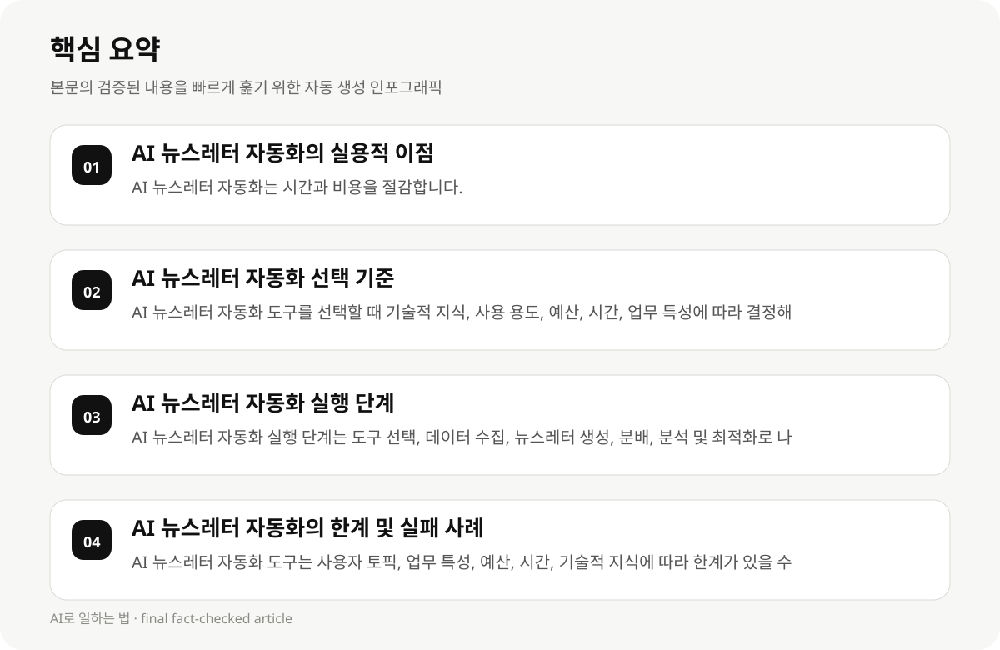

AI 뉴스레터 자동화의 실용적 이점 #
AI 뉴스레터 자동화는 직장인 및 지식근로자에게 시간과 비용을 절감하는 실용적인 도구입니다. 이 도구는 뉴스레터 생성, 분배, 분석 과정을 자동화하여 업무 효율성을 높입니다.
AI 기반 뉴스레터 생성 도구는 사용자 토픽에 맞춘 자동화된 뉴스레터를 생성하며, 이는 업무의 일관성과 효율성을 높입니다. 예를 들어, Inkredo와 Topical은 AI 기반 뉴스레터 생성을 지원하며, 뉴스레터의 선택 및 생성 과정을 자동화합니다.
- AI 뉴스레터 자동화는 시간과 비용을 절감합니다.
- AI 기반 뉴스레터 생성 도구는 사용자 토픽에 맞춘 자동화된 뉴스레터를 생성합니다.
- Inkredo와 Topical은 AI 기반 뉴스레터 생성을 지원하며, 뉴스레터의 선택 및 생성 과정을 자동화합니다.
AI 뉴스레터 자동화 선택 기준 #
AI 뉴스레터 자동화 도구를 선택할 때는 기술적 지식, 사용 용도, 예산, 시간, 그리고 업무 특성에 따라 결정해야 합니다.
직장인 및 지식근로자는 기술적 지식이 부족할 수 있으므로, 사용 용도와 업무 특성에 맞는 간단한 도구를 선택하는 것이 중요합니다.
AI 뉴스레터 자동화 도구의 사용 기술 및 전문성은 선택 시 중요한 고려 사항입니다. 예를 들어, Zapier Automation Platform은 9,000+ 앱 연결을 지원하며, AI 기반 워크플로우를 제공합니다.
- AI 뉴스레터 자동화 도구를 선택할 때 기술적 지식, 사용 용도, 예산, 시간, 업무 특성에 따라 결정해야 합니다.
- 직장인 및 지식근로자는 기술적 지식이 부족할 수 있으므로, 사용 용도와 업무 특성에 맞는 간단한 도구를 선택하는 것이 중요합니다.
- Zapier Automation Platform은 9,000+ 앱 연결을 지원하며, AI 기반 워크플로우를 제공합니다.
AI 뉴스레터 자동화 실행 단계 #
AI 뉴스레터 자동화 실행 단계는 다음과 같은 단계로 나누어집니다: 도구 선택, 데이터 수집, 뉴스레터 생성, 분배, 분석 및 최적화.
직장인 및 지식근로자는 데이터 수집 과정에서 사용자 토픽을 수집하고, 뉴스레터 생성 과정에서 AI 기반 자동화를 적용해야 합니다.
AI 뉴스레터 자동화 실행 단계는 기술적 지식과 시간이 필요하며, 직장인 및 지식근로자에게는 적절한 자원이 부재할 수 있습니다.
- AI 뉴스레터 자동화 실행 단계는 도구 선택, 데이터 수집, 뉴스레터 생성, 분배, 분석 및 최적화로 나누어집니다.
- 직장인 및 지식근로자는 데이터 수집 과정에서 사용자 토픽을 수집하고, 뉴스레터 생성 과정에서 AI 기반 자동화를 적용해야 합니다.
- AI 뉴스레터 자동화 실행 단계는 기술적 지식과 시간이 필요하며, 직장인 및 지식근로자에게는 적절한 자원이 부재할 수 있습니다.

AI 뉴스레터 자동화의 한계 및 실패 사례 #
AI 뉴스레터 자동화 도구는 사용자 토픽, 업무 특성, 예산, 시간, 기술적 지식에 따라 한계가 있을 수 있습니다.
AI 뉴스레터 자동화 도구의 성공 사례는 다양한 산업 및 직업군에 적용 가능하지만, 특정 직업군에 맞춤화된 도구가 부재할 수 있습니다.
AI 뉴스레터 자동화의 실패 사례는 사용자 토픽의 정확도, 업무 특성의 맞춤화, 예산의 부족, 시간의 부족 등에 기반합니다.
- AI 뉴스레터 자동화 도구는 사용자 토픽, 업무 특성, 예산, 시간, 기술적 지식에 따라 한계가 있을 수 있습니다.
- AI 뉴스레터 자동화 도구의 성공 사례는 다양한 산업 및 직업군에 적용 가능하지만, 특정 직업군에 맞춤화된 도구가 부재할 수 있습니다.
- AI 뉴스레터 자동화의 실패 사례는 사용자 토픽의 정확도, 업무 특성의 맞춤화, 예산의 부족, 시간의 부족 등에 기반합니다.
AI 뉴스레터 자동화의 성공 사례 #
AI 뉴스레터 자동화의 성공 사례는 다음과 같습니다: Inkredo는 사용자 토픽에 맞춘 자동화된 뉴스레터를 생성하며, Topical은 뉴스레터의 선택 및 생성 과정을 자동화합니다.
AI 뉴스레터 자동화의 성공 사례는 다양한 산업 및 직업군에 적용 가능하지만, 특정 직업군에 맞춤화된 도구가 부재할 수 있습니다.
AI 뉴스레터 자동화의 성공 사례는 사용자 토픽의 정확도, 업무 특성의 맞춤화, 예산의 부족, 시간의 부족 등에 기반합니다.
- AI 뉴스레터 자동화의 성공 사례는 Inkredo와 Topical 등 AI 기반 뉴스레터 생성 도구를 통해 이루어집니다.
- AI 뉴스레터 자동화의 성공 사례는 다양한 산업 및 직업군에 적용 가능하지만, 특정 직업군에 맞춤화된 도구가 부재할 수 있습니다.
- AI 뉴스레터 자동화의 성공 사례는 사용자 토픽의 정확도, 업무 특성의 맞춤화, 예산의 부족, 시간의 부족 등에 기반합니다.
AI 뉴스레터 자동화의 실천 전략 #
AI 뉴스레터 자동화의 실천 전략은 다음과 같습니다: 사용자 토픽 수집, 뉴스레터 생성, 분배, 분석 및 최적화.
직장인 및 지식근로자는 사용자 토픽 수집 과정에서 데이터를 수집하고, 뉴스레터 생성 과정에서 AI 기반 자동화를 적용해야 합니다.
AI 뉴스레터 자동화의 실천 전략은 기술적 지식과 시간이 필요하며, 직장인 및 지식근로자에게는 적절한 자원이 부재할 수 있습니다.
- AI 뉴스레터 자동화의 실천 전략은 사용자 토픽 수집, 뉴스레터 생성, 분배, 분석 및 최적화로 나누어집니다.
- 직장인 및 지식근로자는 사용자 토픽 수집 과정에서 데이터를 수집하고, 뉴스레터 생성 과정에서 AI 기반 자동화를 적용해야 합니다.
- AI 뉴스레터 자동화의 실천 전략은 기술적 지식과 시간이 필요하며, 직장인 및 지식근로자에게는 적절한 자원이 부재할 수 있습니다.
AI 뉴스레터 자동화의 결론 #
AI 뉴스레터 자동화는 직장인 및 지식근로자에게 시간과 비용을 절감하는 실용적인 도구입니다. 이 도구는 사용자 토픽, 업무 특성, 예산, 시간, 기술적 지식에 따라 선택 및 실행 단계를 결정해야 합니다.
AI 뉴스레터 자동화의 성공 사례는 다양한 산업 및 직업군에 적용 가능하지만, 특정 직업군에 맞춤화된 도구가 부재할 수 있습니다.
AI 뉴스레터 자동화의 실행 단계는 기술적 지식과 시간이 필요하며, 직장인 및 지식근로자에게는 적절한 자원이 부재할 수 있습니다.
- AI 뉴스레터 자동화는 직장인 및 지식근로자에게 시간과 비용을 절감하는 실용적인 도구입니다.
- AI 뉴스레터 자동화의 성공 사례는 다양한 산업 및 직업군에 적용 가능하지만, 특정 직업군에 맞춤화된 도구가 부재할 수 있습니다.
- AI 뉴스레터 자동화의 실행 단계는 기술적 지식과 시간이 필요하며, 직장인 및 지식근로자에게는 적절한 자원이 부재할 수 있습니다.